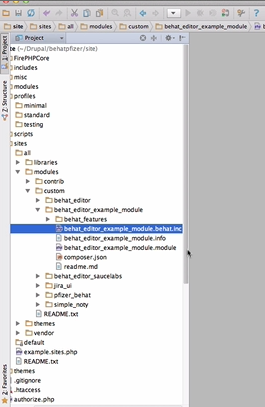
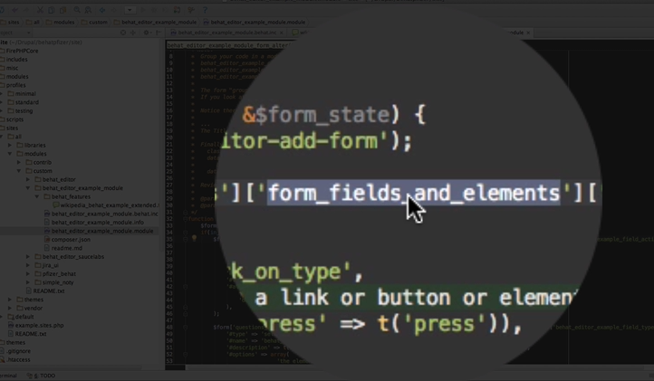

You can see the related video here
--
→ Once you download this module it will then go through composure manager to start building the needed composure libraries
There is only a couple things going on in this module.
1. A form alter to alter the UI 2. It also has the Behat Inc file (see image below)
" title="">
NOTE: This is the file that the druple extension module looks for to then pull in your sub context custom steps
So in this case you could add a couple * Press the x path and followed the x path
-- Why would you do this?
* If they did not initially exist in a way that worked.
* Or this was something you needed that did not already exist.
Once you write them here you can use them in your test
In this case all of the tests will live in the Behat feature folder.
Here is an example of the test using those particular steps
Follow the X path
Now any test inside your behat features folder will be seen and you can run it
It has to be in that folder it can not be in a subfolder right now
- You can use all of our existing steps of course but if you need any custom ones you would put them in the behat inc folder.
→ you would then start building your form alter to make those steps show up in the form.
→ Add your steps to the particular grouping category
→ Start making the form fields needed to make those steps work
There are a number of elements of the form to make it work right with the javascript.
" title="">
Ideally the code and the numbers that come with the code will help you read it.
Some of these codes are:
As well as the grouping of these elements with the group class
Those grouping elements help the final add button trigger the javascript to grab the right text and the right values and to create the graphical scenario builder and we will look at that in a moment.
**That is what makes up the group**
-

The group here then helped this group that was made custom to show up with a group that already existed
Now you have your particular custom step
- You should now be able to see that you have your 'AND I' and 'your select options' as well as your next set of select options (which doesn't have a title because you are not adding any text other than the "select value" and finally the field that they are filling in and then the add button.
So now if I was to put AND I press : we will just use : CSS path for a moment we will just say : Test1 p for example
There are so many different ways to do it but we will just use that and I press the element DIVtest 1. Since it is not a link we can't follow it or link it we press it
and thats it now your step will pass.
And again if you didn't add it to the UI no big deal because in your case you might just be uploading your test
Go back to the admin interface
Notice here that all the tests have a module folder
If you look for your test "behat_editor" you will see that there is the example module folder and all the tests in that folder will have their own lines here. This way you can quickly search for your test.
You will not be able to edit or delete it, because you are managing it in your folder for your module. However, you can view it and run it.
When you go back to your code you have a chance to add more tests to your behat features folder and then upload them.
We will have a jenkins server setup so that when you upload a new test to your branch in your repositories it will then automatically push it to your site so that you will then see it within a moment or two.
To Do This: